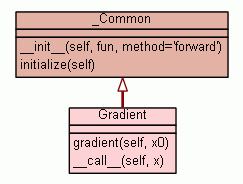

Class Gradient
source code

Estimate gradient of fun at x0
Assumptions
-----------
fun - SCALAR analytical function to differentiate.
fun must be a function of the vector or array x0,
but it needs not to be vectorized.
x0 - vector location at which to differentiate fun
If x0 is an N x M array, then fun is assumed to be
a function of N*M variables.
Examples
--------
>>> import numdifftools.nd_algopy as nda
>>> fun = lambda x: np.sum(x**2)
>>> dfun = nda.Gradient(fun)
>>> dfun([1,2,3])
array([ 2., 4., 6.])
#At [x,y] = [1,1], compute the numerical gradient
#of the function sin(x-y) + y*exp(x)
>>> sin = np.sin; exp = np.exp
>>> z = lambda xy: sin(xy[0]-xy[1]) + xy[1]*exp(xy[0])
>>> dz = nda.Gradient(z)
>>> grad2 = dz([1, 1])
>>> grad2
array([ 3.71828183, 1.71828183])
#At the global minimizer (1,1) of the Rosenbrock function,
#compute the gradient. It should be essentially zero.
>>> rosen = lambda x : (1-x[0])**2 + 105.*(x[1]-x[0]**2)**2
>>> rd = nda.Gradient(rosen)
>>> grad3 = rd([1,1])
>>> grad3==np.array([ 0., 0.])
array([ True, True], dtype=bool)
See also
--------
Derivative, Hessdiag, Hessian, Jacobian
|
|
gradient(self,
x0)
Gradient vector of an analytical function of n variables |
source code
|
|
|
|
|
|
Inherited from _Common:
__init__,
initialize
Inherited from object:
__delattr__,
__format__,
__getattribute__,
__hash__,
__new__,
__reduce__,
__reduce_ex__,
__repr__,
__setattr__,
__sizeof__,
__str__,
__subclasshook__
|
|
Inherited from object:
__class__
|